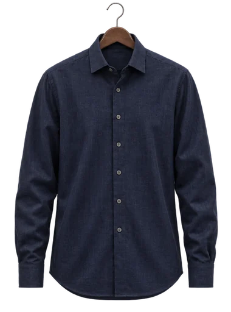
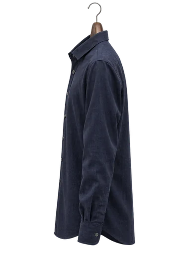
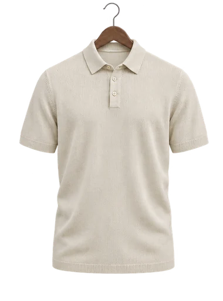
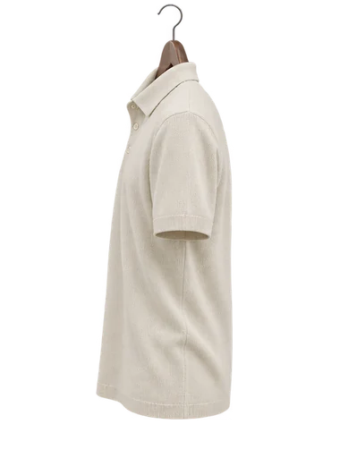
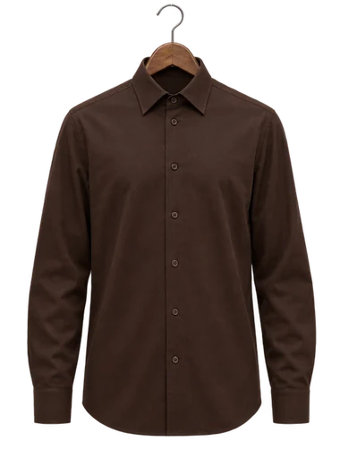
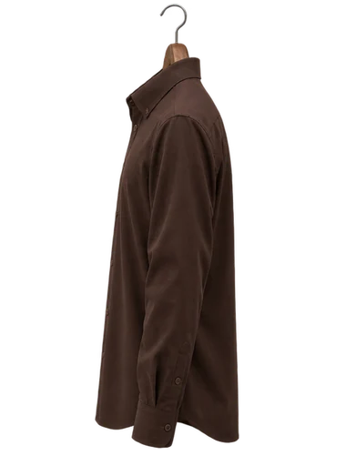
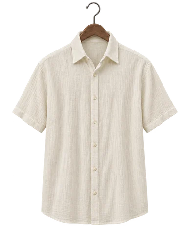
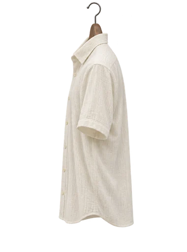
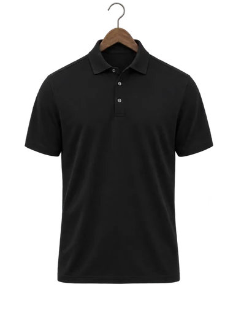
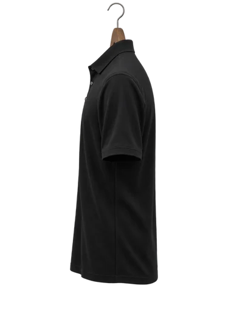
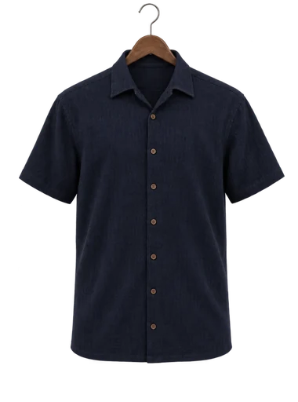
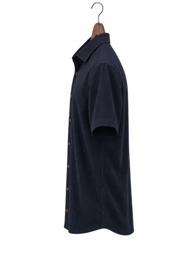
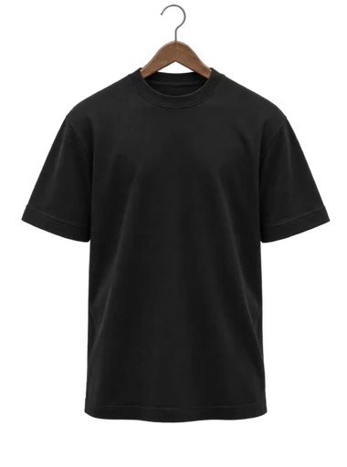
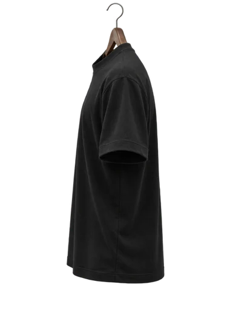
No encontramos prendas. Limpiar filtros
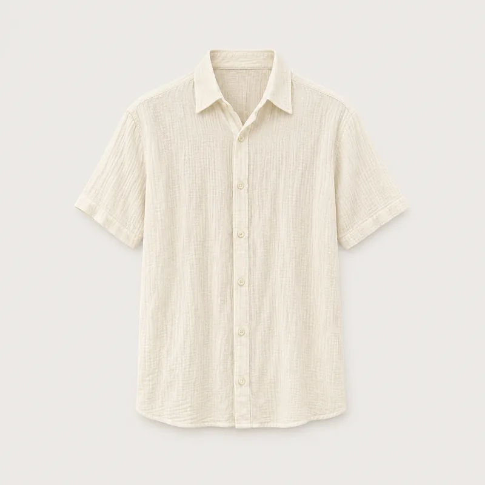
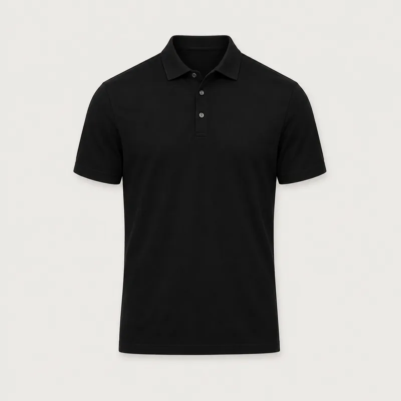
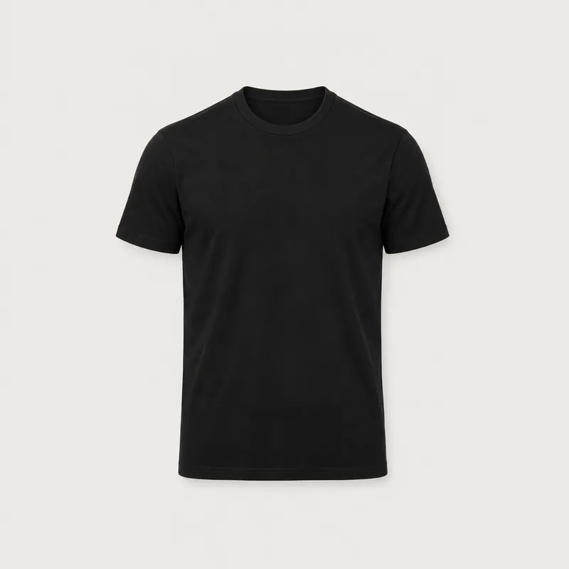
Activá JavaScript para ver las prendas y sus talles.
 COLECCIÓN 01 / URUGUAYCOLECCIÓN 01 / URUGUAY
COLECCIÓN 01 / URUGUAYCOLECCIÓN 01 / URUGUAY